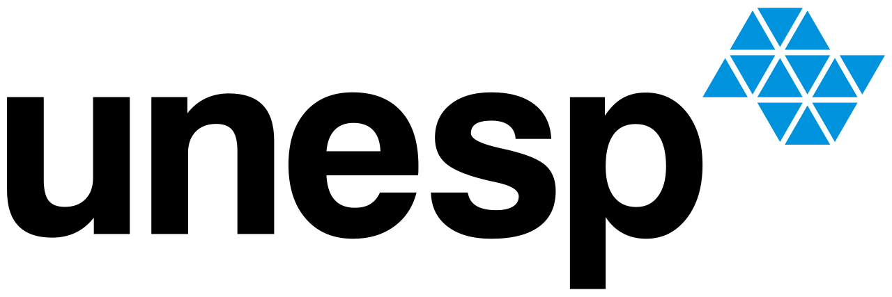

UNESP - 2019
Python: do iniciante ao intermediário.

Sou desenvolvedor web em início de carreira com forte interesse em tecnologias voltadas à criação de soluções inovadoras. Atualmente, sou estudante de Análise e Desenvolvimento de Sistemas, com experiência prática no desenvolvimento de sistemas web voltados à otimização de processos em setores públicos, através do trabalho no Departamento de Tecnologia da Prefeitura Municipal de Três Lagoas. Durante minha trajetória acadêmica e profissional, desenvolvi habilidades em diversas tecnologias, com ênfase em JavaScript, React e TypeScript. Além disso, tenho familiaridade com metodologias ágeis como Scrum e sou um defensor do desenvolvimento sustentável nas soluções tecnológicas que proponho. Acredito no poder da colaboração e busco sempre me atualizar com as melhores práticas de desenvolvimento, com foco na entrega de soluções eficientes, escaláveis e de fácil manutenção. Embora minha experiência ainda seja em desenvolvimento júnior, tenho me dedicado a aprimorar meus conhecimentos, aplicando-os em projetos reais e buscando sempre a excelência no que faço. Meu objetivo é evoluir profissionalmente, aprender continuamente e contribuir para o crescimento da tecnologia e das equipes com as quais trabalho.
Python: do iniciante ao intermediário.
Graduação - Análise de Sistemas

Formação HTML/CSS
Java OO
Java JRE e jdk
Redes
C#
C
Modelos de Gestão

JS para web
UX
Figma
Projetos ágeis com scrum
React
Typescript

Green Software for Practitioners LFC131
Vamos nos conectar! 🌐